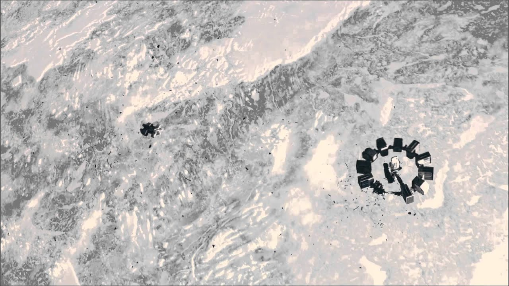

- All of the science seen in Interstellar is totally vaiable within our current theoires and understanding of space and time
- The problems that people face in Interstellar are problems that we could be facing in the next few years
- Humans are becoming better and better at space travel everysingle year. It is only a matter of time before we leave our Solar System
- The soundtrack is widely regared as one of the best
- The shots in the movie are breathtaking
- The film is doing very well, selling out several shows for its 10th anniversary re-release
- The Black Hole (Gargantua) Was Scientifically Accurate
- Matthew McConaughey Shot a Key Scene While Crying for Real
- The Corn Fields Were Real and Grown Specifically for the Movie
Some of the best shots from Interstellar
